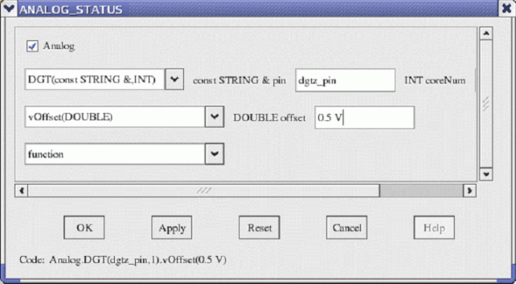
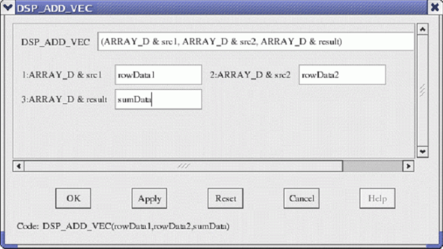
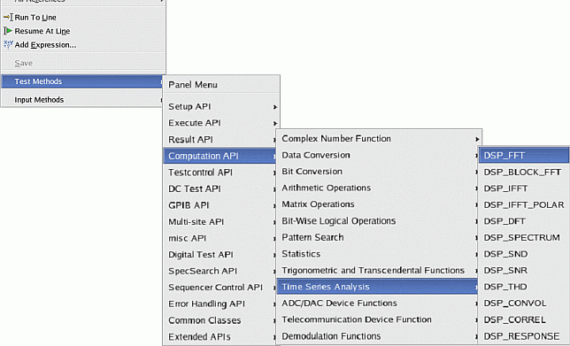

Working with Test Method Panel
You can also use the Test Method Panel to enter the API statements into the Editor view. The contents of the Test Method Panel depend on your selected API's type (class type or function type) as follows.
For Class Type API

The following describes the parts of the above panel.
Object Check Button:
This check button appears for the classes that have a system-defined object name (for example, Analog, Routing and so on). If you turn this button off, the Test Method Panel will generate the statement (a part of the API statement) without the object name.
Constructor Option Menu:
This menu selects an object type from the following options:
Class |
Defines an object with the class name and its parameter in the following syntax: ClassName(parameter) |
Declaration |
Defines an object with the desired name in the following syntax: ClassNameObjectName(parameter) |
Variable |
Specifies the object that has defined with the Declaration option. |
where, ClassName is the class name of the API, parameter is a parameter name of the constructor in the API.
This menu appears for class type APIs that do not have a system-defined object.
Member Function Menu:
This menu selects a member function of the API.
If the selected member function returns an object of another class, an additional selection box will be displayed below for setting up the member functions of the other class.
If the selected member function is for setup, an additional selection box will be displayed below for setting up other member functions for setup. In this way, you can setup multiple setup member functions at once.
Parameter Boxes:
Enter values into the entry boxes or select one from the option menu.
The bottom line shows your settings for the statement that will be inserted in the Text Editor window.
In the title bar of the Test Method Panel, your selected API name (class name or function name) is displayed.
For Function Type API

The following describes the parts of the above panel.
Syntax Selection Area:
This area displays the syntax of the API. If the API has some syntax types, this area displays a selection box for selecting a syntax type. Select the desired type from the option menu.
Parameter Boxes:
They are the entry boxes or selection boxes for setting up parameters of the function type API. Enter values into the entry boxes or select one from the option menu.
Entering an API Statement
To enter a Test Method API at the desired location in the Editor view, do as follows:
- Move the insertion cursor to where you want to enter the API statement.
- Right-click in the Editor view and select Test Methods from the shortcut menu. The submenu appears for selecting the API that you want to enter.

- Select the category for the API from the API categories on the submenu. The next submenu shows sub-categories or APIs in the selected categories.
- Select the desired API. The Test Method Panel for the selected API appears.
- Set up the details (member functions, parameter settings, and so on) from top to bottom in
the Test Method Panel, step by step.
You can also use the tab and arrow keys to move between the entry boxes, selection boxes, and buttons.
- Click OK.
The API statement is entered in the Editor view and the Test Method Panel will close.
If you want to reset your settings to the original state (same as when the Test Method Panel is opened), click Reset. If you want to cancel your settings and then close the Test Method Panel, click Cancel.
You cannot use the Test Method Panel to change the parameter settings for the existing API statement in the Editor view.